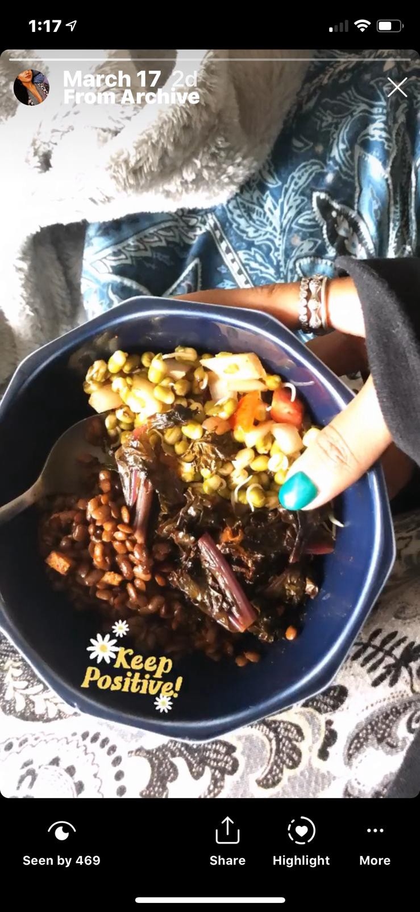

Served with a side of boiled rice.
Horse Gram Stir Fried:
Ingredients:
- Horse gram — 1 cup
- Salt — 1 tbsp
- Water — 2 cups
- Green chillies — 4
- Red chilli powder — 0.5 tbsp
- Olive oil — 2 Tbsp
- Garlic — 3 cloves
- Curry leaves — optional
Preparation:
- Boil the horse gram with water and salt in a closed container / pressure cooker until cooked.
- Add oil in a different pan and saute the garlic, green chillies and curry leaves( if using).
- Drain the water from the cooked horse gram and add it to pan.
- Add chilli power and adjust for salt.
- Cook for 5 minutes and take off the stove and serve hot.
Kale:
Ingredients:
- Kale — A bunch
- Salt — 0.25 tbsp
- Water — 2 Tbsp
- Red chilli powder — A pinch
- Olive oil — 2 Tbsp
- Garlic — 3 cloves
- Lemon juice — 1 tbsp
Preparation:
- Separate the kale from stem and cut into small pieces.
- Saute the garlic with olive oil on medium flame.
- Add kale, lemon juice, salt, water and red chilli powder.
- Mix and cook for 10 minutes covered.
- Serve hot.
Sprouts Salad:
Ingredients:
- Green gram sprouts — 200 grams
- Salt — 1 tbsp
- Onion — 1 small
- Tomato — 1
- Lemon juice — 1 Tbsp
- Red chilli powder — 0.5 tbsp
- Coriander leaves — to garnish
Preparation:
- Cut the onion and tomato into really small pieces.
- Mix all the ingredients
- Add chopped coriander leaves to garnish and serve!